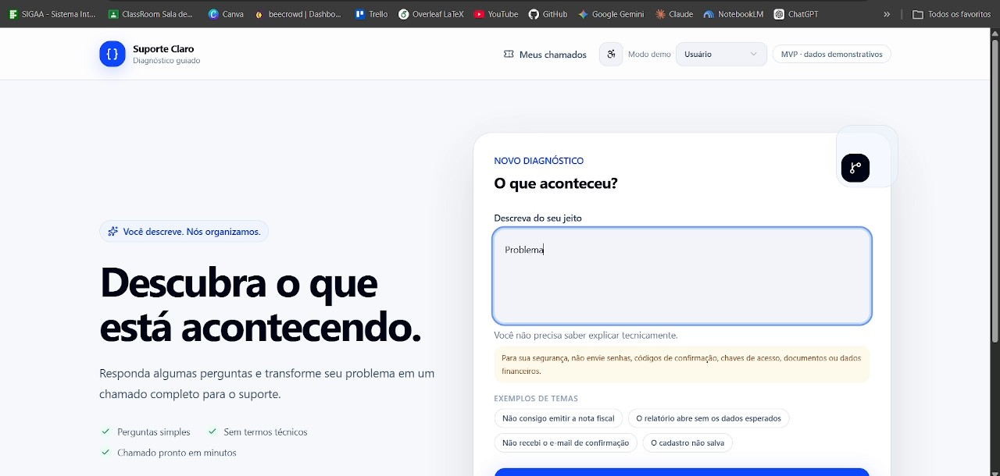
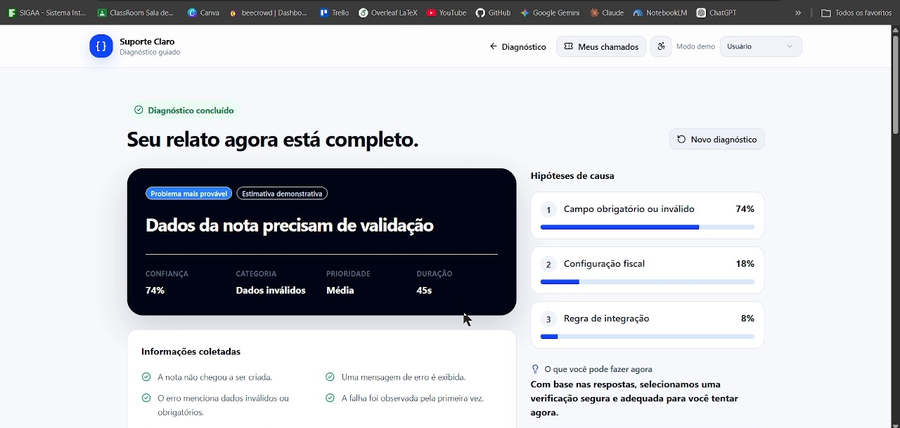
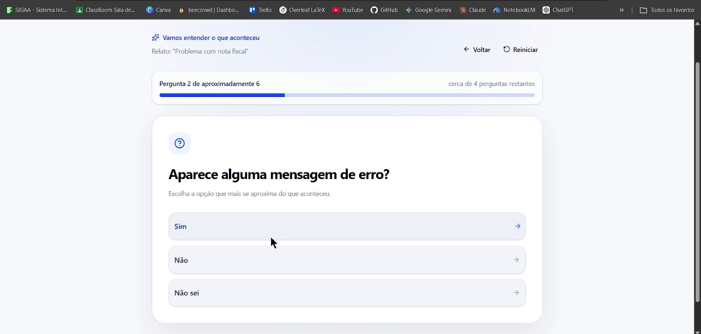
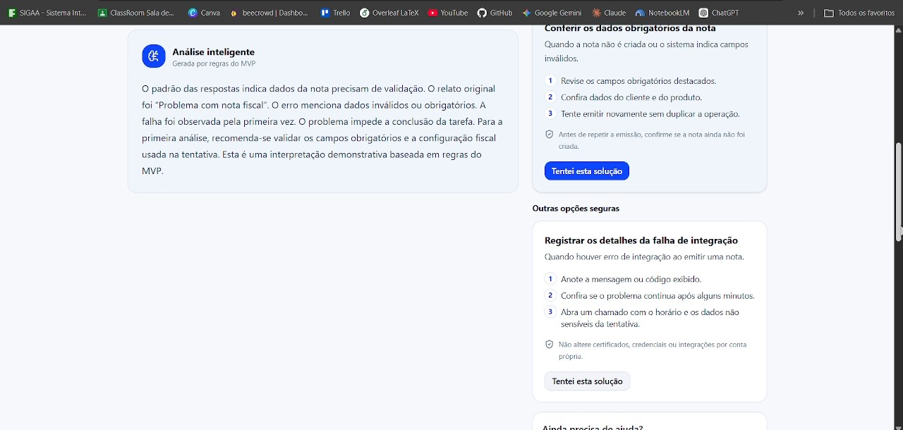
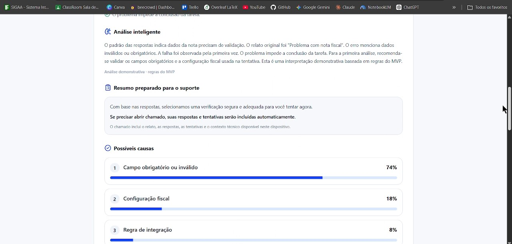
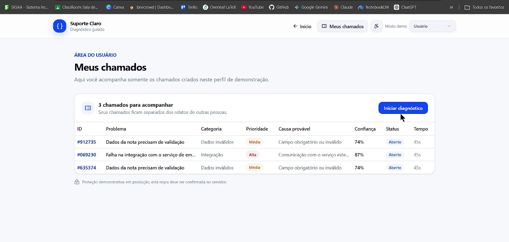
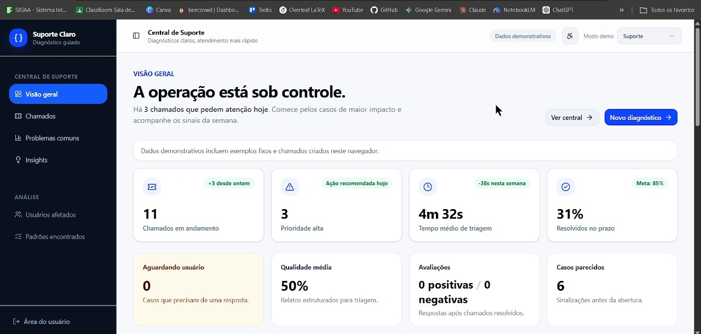
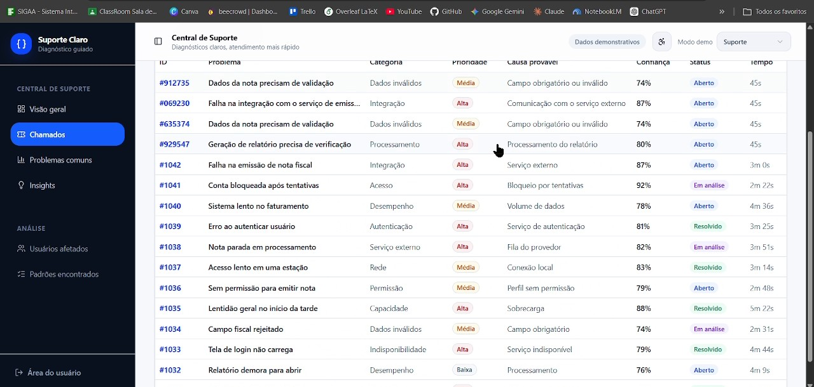
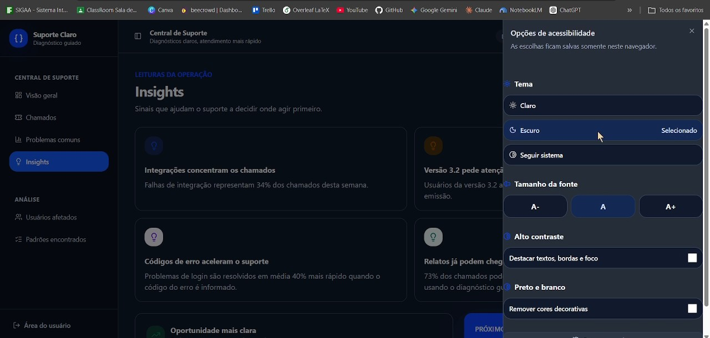

Cliente descreve
Conta com suas próprias palavras o que está acontecendo.
O cliente descreve o que aconteceu, o sistema faz perguntas direcionadas e a equipe recebe um chamado com contexto, tentativas e evidências.
✓ Acesso pelo navegador • Demonstração com dados simulados

Uma solução que transforma relatos vagos em diagnósticos organizados para agilizar o atendimento.
Muitas vezes, os clientes relatam problemas sem dar detalhes suficientes. A equipe precisa fazer várias perguntas e a triagem acaba demorando.
O Nexus Net faz perguntas objetivas de acordo com as respostas do cliente, seguindo etapas de diagnóstico relacionadas ao problema informado.
O suporte recebe as informações organizadas, incluindo o relato inicial, as respostas e as tentativas realizadas, facilitando a análise do chamado.

Informações reunidas em um único lugar.
O processo é dividido em quatro etapas simples.
Conta com suas próprias palavras o que está acontecendo.
O sistema encaminha o relato para uma categoria de diagnóstico.
As perguntas ajudam a entender melhor o problema a cada resposta.
O cliente recebe orientações ou as informações são organizadas para o suporte.
Confira algumas telas reais do projeto, capturadas durante a demonstração em vídeo.
O cliente descreve o problema e começa a responder perguntas para direcionar o diagnóstico.

As perguntas mudam conforme as respostas, ajudando a identificar a situação relatada.
As informações respondidas são reunidas para que o cliente e a equipe entendam o caso.

O fluxo apresenta instruções e próximos passos relacionados ao problema informado.

O atendimento pode reunir detalhes importantes para dar continuidade à análise.

O painel permite visualizar chamados e acompanhar as informações registradas.

Uma visão geral ajuda a equipe a acompanhar o atendimento e os indicadores apresentados.

As telas de gestão ajudam a consultar e organizar os atendimentos registrados.

O painel apresenta informações que podem apoiar a avaliação do fluxo de atendimento.
As imagens acima são capturas de tela da demonstração em vídeo. Clique em qualquer imagem para abri-la em tamanho maior.
Algumas informações importantes sobre a demonstração.
Esta versão é uma demonstração. Antes de usar dados reais, é necessário confirmar como os dados são armazenados e implementar autenticação, controle de acesso, proteção e auditoria adequados.
A integração depende da arquitetura e das APIs disponíveis no projeto. É necessário configurar e testar a comunicação com o sistema de suporte escolhido.
Sim, desde que as regras e os dados da aplicação sejam ampliados para incluir novas categorias, perguntas, respostas e orientações.
O fluxo demonstrado pode trabalhar com regras e árvores de decisão. A utilização de inteligência artificial depende de uma integração implementada especificamente para isso.
Acesse o repositório do grupo para conferir o desenvolvimento do Nexus Net.
Ver projeto no GitHub ↗